Det här är en introduktion till Sonic Pi, ett programmeringsspråk där du kan programmera musik. I förra uppgiften installerade du programmet på din dator. Nu ska du få lära dig att använda det för att spela toner.
Sam Aaron skapade Sonic Pi för att han tycker att musik och programmering passar väldigt bra ihop. När du programmerar i Sonic Pi hör du direkt det som du kodar – på så sätt kan du lära dig programmera samtidigt som du skapar musik!
Starta programmet Sonic Pi. Så här ser Sonic Pi ut när du öppnar programmet:
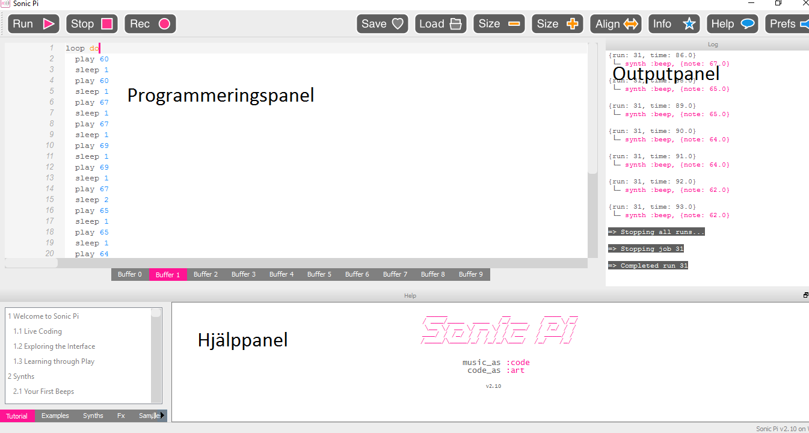
Titta runt en stund. Det finns tre fönster:
Det stora fönstret till vänster programmerar du i, den kallas för PROGRAMMERINGSPANEL.
Till höger finns en OUTPUTPANEL som visar information om koden som körs.
Längst ner finns en HJÄLPPANEL som hjälper till att visa information och hjälp.
I hjälppanelen finns bland annat förslag på kod som du kan skriva, tips på olika synthljud och mycket mer.
Buggvarning ser ut såhär:
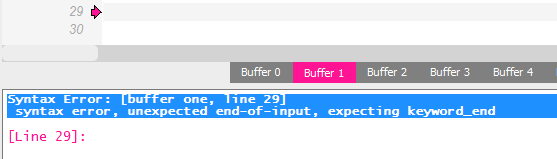
Nu kan vi börja programmera musik! Du ska få testa att skriva kod för olika toner.
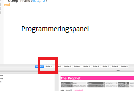
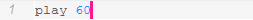
Testa ditt program! Klicka på RUN längst upp i vänstra hörnet av programmeringspanelen. Vad händer? Hör du något? Spelas en ton?
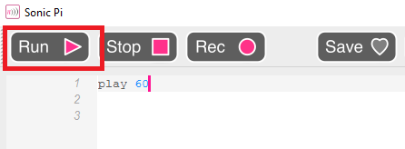
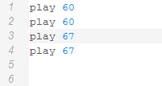
Testa ditt program! Klicka på RUN igen. Hör du fyra toner nu? 60 och 67 är två olika toner som spelas två gånger var, men datorn spelar tonerna så fort att vi knappt hinner höra dem separat. Det låter som att alla kommer på samma gång! Vi vill att de ska spelas efter varandra med en paus emellan. Det gör vi i nästa steg.
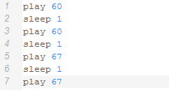
Tips! Sleep betyder sova på engelska. Sleep 1 betyder att du lägger in en paus som är en sekund lång. Du kan ändra detta genom att skriva sleep 0,5 eller sleep 2 om du vill ha snabbare eller långsammare tempo mellan tonerna.
Testa ditt program! Klicka på RUN igen. Spelas fyra toner i rad med en paus mellan tonerna nu? Nu hinner vi höra de olika tonerna! Du kan stoppa musiken genom att klicka på STOP. Hör du vilken sång det är som du kommer att programmera redan nu?
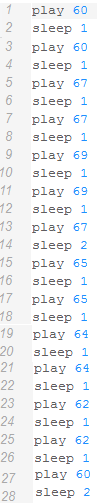
Testa ditt program! Klicka på RUN igen. Känner du igen låten? Det är "Blinka lilla stjärna"!
Låten spelas bara en gång. Nu kan vi använda en LOOP som gör att vi kan spela låten två gånger utan att behöva trycka på play två gånger. Att loopa kod betyder att repetera, göra något flera gånger.
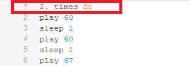
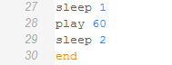
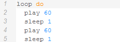
Testa ditt program! Klicka på RUN igen. Spelas "Blinka lilla stjärna" så många gånger som du har valt att repetera den? Vad tror du händer om du ändrar siffran i 2. times do?
Grattis, nu har du lärt dig att programmera musik! I nästa uppgift får du fler tips på hur du kan skapa egen musik med Sonic Pi. Men redan här har du några utmaningar om du vill testa dig fram på egen hand:
Vill du att blinka lilla stjärna ska spelas snabbare eller långsammare?
Testa att ändra på hur långa pauserna ska vara genom att ändra antal sekunder på sleep. Till exempel 0.5 eller 2 sekunder – experimentera och hitta en lagom snabb version.
Prova olika ljud för att göra din favoritversion av "Blinka lilla stjärna"!
Du kan använda olika synthljud i Sonic Pi. Längst upp i koden, skriv use_synth :. Efter kolon kommer du att få förslag på olika synthljud som du kan använda. Prova till exempel use_synth :fm eller use_synth :dull_bell.
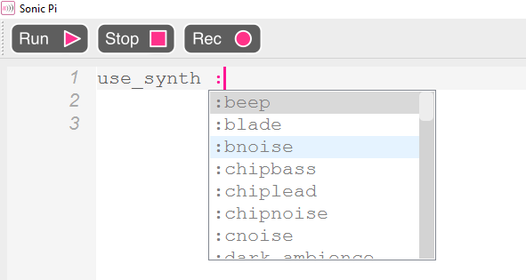
Testa dig fram!
Vill du göra din egen musik i Sonic Pi? Testa att ändra tonerna och prova dig fram för att skapa en helt ny melodi.
Kan du skapa musik som du kan använda i Scratch-uppgiften Framtidens musikspelare? Till det behöver du två låtar, en glad och en arg, eller så många som behövs i din musikspelare.
Om du vill spara din musik i Sonic Pi, finns en instruktion för det här.